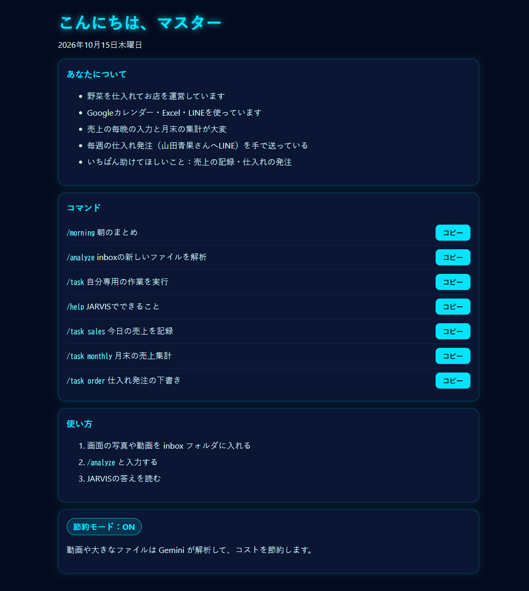

新幹線の手配も、家族旅行の計画も。話しかけて進める、あなた専用のAIアシスタント
「調べて、比べて、入力して……」の面倒な身の回りの用事を、AI に話しかけながら進められます。「PushStart AI」は、そのための土台（Claude Code）を、ダブルクリックであなた用に整えるスターターパックです。名前と話し方を決められ、あなたの日課や家族の事情を覚えて、次回も説明し直さずに続けられます（結果は使い方によります）。コードを書く必要も、長いマニュアルを読む必要もありません。
Claude Code のインストールから、あなた専用の設定まで、ダブルクリックと数回の操作で済みます。（Claude の有料プランは別途必要です）
※動画は早送りしています。
※Claude の有料プラン（Pro 等。Claude アカウントでログインして使う方のみ対応、API キーでの利用は対象外）が別途必要です。購入前の注意は、このページの下にまとめています。
3ステップで始められます
- セットアップファイルをダブルクリックします（Windows / Mac）
- 開いたフォルダに、普段使う画面のスクショ（と動画）を入れます
- AIに名前を付けます。あなたの日課を読み取って、自分専用の作業とダッシュボードを作ります
セットアップ中とAIとの会話には、文字だけのウィンドウを使います。難しい操作は必要ありません。
できること
- Windows / Mac のワンクリックセットアップ（公式インストーラーで Claude Code と必要なツールを導入）
- 最初から使える基本の機能（
/morningで朝のまとめ など）と、あなたの作業に合わせた自分専用の作業 - 自分専用のダッシュボード
- 動画・大きなファイルは Google Gemini に回して Claude の使用量を節約（無料枠あり）
- 節約・標準・パワーの3つのモードから選べます
- 困ったときは、同梱のヘルプ用の文章を Claude に貼りつければ案内してもらえます
- クリーンな Mac と Windows で、セットアップを自動テスト済みです

PushStart AI を入れると、何が変わる？
Claude Code は、公式の手順で自分で入れて使えます。PushStart AI は、そのあとの「あなた用に整える」作業を、まとめて済ませるものです。
- 準備がダブルクリックで済む：Claude Code と必要なツールを自動で入れます。（自分で入れる場合は、文字を打ち込む手順があります）
- 使える機能が最初から入っている：朝のまとめ（/morning）、新しいファイルの解析（/analyze）、調べ物（/research）などの基本の機能を、最初から用意しています。あなたの名前や日課を覚えて答えるので、毎回同じ説明を打たなくて済みます。さらに、よく使う作業は「/task 名前」の自分専用の呼び出しとして増やせます。
- AIの名前・性格・話し方を決められる：名前を付けて、性格と話し方（落ち着いた執事風、気さくな相棒風、ドラマの相棒風など。自分の言葉で決めることもできます）を選ぶと、あなたのやり方を学んで、その話し方で話してくれます。自分で用意した画像を、ダッシュボードの顔にもできます。（既存のキャラクターや、実在の人物の声・話し方に似せる機能ではありません）
- 節約して使える切り替え機能つき：AIの「考える力」を、節約・ふつう・パワーの3段階で切り替えられます。簡単な質問は安く、難しい相談は賢く。動画や大きなファイルは Google Gemini（無料枠あり）に任せて、使う分を減らします。
- 困ったときにすぐ聞ける：Claude に貼りつけるだけで、一歩ずつ教えてくれる「ヘルプ用の文章」が付いています。
- 新しい機能を教えてくれて、使い方も聞ける：新しい機能が出たら、あなたの使い方に合わせて「こう役立つ」と知らせます。気になったら「これ、私も使ったほうがいい？」と聞けば、どう使えるかを案内します。
※例です。スクショや動画から作られる自分専用の作業は、画面の内容によって結果が変わります。
実際にやってみたこと（私の記録）
これらは Claude Code 本体でできたことで、PushStart AI に入っている機能ではありません。（ブラウザを操作する拡張機能を、別に設定して使いました）
- 新幹線のきっぷの手配（大人2人＋小学生2人、割引・介助者つき）：依頼から6件目の購入まで約47分（条件変更、ログイン切れのやり直し、6回の本人認証を含みます）。AIは、空席の検索、割引商品の確認、列車の候補表、座席を2人＋2人で近くに指定、購入の操作、合計金額の確認までを進めました。ログイン、カードの本人認証、列車の選択、購入の許可は、自分で行いました。
- 家族旅行の計画（大人2人＋小学生2人、3日間）：公式の情報をもとに、予約が始まる日の洗い出し、4人分の概算費用、A4 1枚のまとめまでを、依頼した同じ日に作ってもらいました。宿の予約は予約開始日がまだ先なので、これからです。
お金が動く操作は、必ず自分で確認して「はい」と言ってから進みます。いつも思いどおりに動くとは限りません。結果は環境によります。
Chrome もつなぐと、もっと便利です（任意）
Chrome（ネットを見る画面）に、小さな追加機能を足すと、AI があなたの Chrome を見ながら、確認を取りつつ手続きを進めてくれます。たとえるなら、パソコンの横に座って、大事なところで「これで押していいですか？」と聞いてくれる人です。
- きっぷ探し：「この日の新幹線の空席を探して」と頼むと、予約サイトで探して、候補を表にして見せます。選ぶのも、買うのも、あなたの「はい」のあとです。
- 旅行の下調べ：公式のページを見て、予約が始まる日や値段をまとめます。
- 申し込みの入力：フォームへの入力を進めます。送る前に、必ず中身を見せます。
この追加機能は、あなたが Chrome に足します（約3分。やさしい手順書つき）。ログイン、パスワード、カードの本人確認は、あなたが自分で行います。Claude Code と Chrome の追加機能は、別に必要です。いつも思いどおりに動くとは限りません。
こんな方に向いています
- 旅行、きっぷ、各種の手続き調べなど、身の回りの面倒な用事を、話しかけて進めたい方
- パソコンの細かい設定や、文字を打ち込む操作が苦手で、ダブルクリックから始めたい方
向かない方：自分で調べて組み立てるのが苦にならない方は、無料の雛形や Claude Code にもともとある機能でも十分です。Claude の有料プランをお持ちでない方も、先にそちらが必要です。
購入先（ストアごとに価格を設定しています）
価格はストア（プラットフォーム）ごとに設定しています。個別のお値引き・通貨変更には対応しておりません。
ご購入前に必ずお読みください
- Claude の有料プラン（Pro または Max。Claude アカウントでログインして使う方のみ対応で、API キーでの利用は対象外）が別途必要です。本商品には含まれません。（目安：Pro は月額20ドル（約3,100円）、年払いなら月17ドル（約2,700円）相当。税別、1ドル=157円で計算した目安（2026年10月22日時点）で、ドル額は2026年10月時点の公式表示です。為替や支払い方法で変わるため、最新は Anthropic の公式ページでご確認ください）切り替え方：claude.ai にログインし、https://claude.ai/upgrade を開いて Pro を選びます（スマホアプリは各アプリストアで価格を確認できます）。
- Claude は Anthropic 社が対応する国・地域で、18歳以上の方のみ利用できます（対応国）。
- Windows 10/11 または macOS、インターネット接続が必要です。
- 初回は Claude へのログインが必要です。Mac では公式の補助ソフトの導入画面が開く場合があります。
- コード署名をしていないため、初回に Windows / Mac のセキュリティ警告が出ます。案内に沿って進めてください。
- Gemini の無料枠では、送った内容が Google の製品改善に使われる場合があります。EEA・スイス・英国では有料キーをおすすめします。
- ダウンロード商品のため、返品・キャンセルは原則お受けできません。記載の動作環境を満たしているのに動作せず解決できない場合や、法令で求められる場合はご相談ください。
よくある質問
プログラミングの経験がなくても使えますか？
コードを書く必要はありません。ただ、初回のログインやセキュリティ警告の操作など、数回のクリックは必要です。手順は同梱のガイドにあります。
映画のような自分専用のAIアシスタントを作る簡単な方法はありますか？
このパックは、そのための入口として作りました。ダブルクリックでセットアップし、普段の画面のスクショを渡すと、あなたの日課に合わせた自分専用の作業とダッシュボードを作ります。
無料で配られている自作用の雛形（テンプレート）や、Claude Code にもともとある機能で自作するのと何が違いますか？
無料の雛形や Claude Code にもともとある機能でも、自分専用のエージェントは作れます。このパックは、パソコンの細かい設定や文字を打ち込む操作に慣れていない方向けに、ダブルクリックで始め、普段の画面のスクショを渡すと日課に合わせた自分専用の作業とダッシュボードまで作る流れにまとめたものです。自分で調べて組み立てるのが苦にならない方は、無料のものでも十分です。
Claude の契約は含まれていますか？
含まれていません。Claude の有料プラン（Pro 等。Claude アカウントでログインして使う方のみ対応、API キーでの利用は対象外）が別途必要です。
Mac でも Windows でも使えますか？
どちらにも対応しています。
困ったときは？
同梱のヘルプ用の文章（faq_prompt.txt）を Claude に貼り付けてご相談ください。多くはそれで解決します。解決しない場合は、下の問い合わせフォームからご連絡ください（Windows か Mac か、どこで止まったか、出た画面を書いてもらえると早く確認できます。順次ご返信します）。
動かなかったときは返金できますか？
返金は、ご購入のストア（BOOTH / note / Gumroad）の規定に沿って、ストア経由で受け付けます。説明どおりに動かない場合は、状況をお知らせください。確認します。
Book trains, plan family trips — just by talking. Your own AI assistant
PushStart AI is a starter pack that sets up Claude Code (an AI you talk to) around you with a double-click. Give it a name and a way of talking; it remembers your routine and family details so you do not re-explain every time (results vary). No coding. No long manual.
From installing Claude Code to a setup built around your own routine: a double-click and a few steps. (A paid Claude plan is required separately.)
The video is sped up.
* A paid Claude plan (Pro/Max, signed in with your Claude account; API keys are not supported) is required separately. Please read the notes below before buying.
Three steps
- Double-click the setup file (Windows / Mac)
- Drop screenshots (and videos) of the screens you use every day into the folder that opens
- Name your agent. It reads your routine and builds your own commands and dashboard
A text-only window is used during setup and when chatting with the agent. You don't need to type technical commands.
What you get
- One-click setup for Windows and Mac (installs Claude Code and required tools with official installers)
- Basic commands from day one (
/morningbriefing and more), plus your own tasks built from your real routine - A personal dashboard
- Videos and big files go to Google Gemini (free tier available) to save Claude usage
- Choose Saver, Standard or Power mode
- Self-help support prompt: paste it into Claude and it walks you through problems
- Setup tested automatically on clean macOS and Windows
What changes when you add PushStart AI?
You can install and use Claude Code yourself by following the official steps. PushStart AI takes care of the part after that: setting it up around you, all in one go.
- Setup is a double-click: It installs Claude Code and the tools it needs for you. (Doing it yourself means typing install commands.)
- Ready-made commands from day one: Basic commands are included from the start: /morning (morning briefing), /analyze (analyze new files), /research (web research) and more. They remember your name and routine, so you do not re-explain every time. You can also add your own tasks as "/task name" commands.
- Make it yours: give it a name, a personality and a way of talking (calm butler, friendly buddy, sharp partner, or describe your own), and add a picture you own as its face on your dashboard. It learns how you work and talks to you that way. (It does not imitate existing characters or real people's voices.)
- Switchable thinking levels to save usage: You can switch the AI between Saver, Standard and Power thinking levels (cheap for simple questions, stronger for hard ones). Videos and big files go to Google Gemini (free tier available).
- Help when you are stuck: A self-help prompt you paste into Claude, which walks you through the problem step by step.
- Tells you what is new: When new features come out, it explains how they help you; if one looks interesting, just ask "should I use this?" and it shows you how.
*Examples only. The personal tasks built from your screenshots and videos depend on what your screens show; results vary.
What I actually did (my own records)
These were done by Claude Code itself, not features of PushStart AI. (A browser extension was set up separately.)
- Booking Japanese bullet-train tickets (2 adults + 2 children, with discounts): about 47 minutes from request to the 6th purchase, including re-logins and six card authentications. The AI searched seats, checked discount fares, built a train table, picked seats close together and checked the total. I logged in, did the card authentication, chose the trains and approved each purchase.
- Planning a 3-day family trip (2 adults + 2 children): from official information, it listed when bookings open, estimated costs for four and made a one-page summary on the same day. Hotel booking opens later, so nothing is booked yet.
Anything involving money is confirmed by you first. It does not always work as expected; results vary.
Add Chrome for even more help (optional)
Add a small add-on to Chrome and the AI can look at your Chrome and carry out steps while checking with you. Think of it as someone sitting next to you at the computer who asks, "Shall I press this?" before anything important.
- Train tickets: ask "find seats on this day" and it searches the booking site and shows you a table of options. Choosing and buying happen only after your "yes".
- Trip research: it reads official pages and sums up when bookings open and the prices.
- Application forms: it fills them in and always shows you the contents before sending.
You add the add-on to Chrome yourself (about 3 minutes, with a plain step-by-step guide). Logins, passwords and card verification are yours. Claude Code and the Chrome add-on are needed separately. It does not always work as expected.
Who it's for
- You want to get everyday errands done by talking — travel, tickets, looking up procedures
- You are not comfortable with config files or commands and want to start with a double-click
Not for you if: you are happy to research and assemble things yourself. Free templates or Claude Code's built-in features work fine for that. You also need a paid Claude plan first.
Where to buy (prices are set per store)
Prices are fixed per store, set to match each platform's specifications, exchange rates and local tax rules. We cannot accept individual discount or currency-change requests.
Please read before buying
- A paid Claude plan (Pro or Max), signed in with your Claude account, is required. API-key use is not supported. It is not included. (Guide: Pro is $20/month, or $17/month billed annually, before tax, as listed on Anthropic's site in October 2026. Prices may change; please check Anthropic's official page.) To upgrade: log in at claude.ai, open https://claude.ai/upgrade and choose Pro (on mobile, prices are shown in your app store).
- Claude is available only in Anthropic's supported countries and regions, for users 18+.
- Windows 10/11 or macOS, and an internet connection.
- First run needs a Claude login. On Mac, the official helper-software installer may open.
- Scripts are not code-signed, so Windows/Mac show a one-time security warning.
- On Gemini's free tier, Google may use submitted content to improve its products. In the EEA, Switzerland and the UK, a paid key is recommended.
- Digital content is generally non-refundable once downloaded. If your PC meets the requirements and it still doesn't work, or where the law requires it, please contact us.
FAQ
Do I need to know how to code?
No coding is needed. A few clicks are still required for the first login and the one-time security warning; the guide shows each step.
How can a beginner set up a personal AI agent?
Double-click the setup file, drop screenshots of the screens you use every day into a folder, and name your agent. It builds custom commands and a dashboard for your routine.
How is this different from free templates found online or building an agent with Claude Code's built-in features?
Free templates and Claude Code's built-in features can also build a personal agent. This pack is for people who are not used to settings or typing technical commands: you double-click to start, give it screenshots of the screens you use every day, and it builds custom commands and a dashboard for your routine. If you are comfortable assembling things yourself, the free options work fine.
Is a Claude subscription included?
No. A paid Claude plan (Pro/Max, signed in with your Claude account; API keys are not supported) is required separately.
Does it work on Mac and Windows?
Yes, both.
What if I get stuck?
Paste the included support prompt (faq_prompt.txt) into Claude and it will walk you through it; that solves most cases. If not, use the contact form below (tell us Windows or Mac, where it stopped, and a screenshot if you can). We reply in order.
Can I get a refund if it does not work?
Refunds are handled through the store where you bought it (Gumroad / BOOTH / note), under that store's policy. If it does not work as described, tell us what happened and we will check.
احجز تذاكر القطار وخطّط لرحلة العائلة بمجرد الحديث. مساعدك الذكي الخاص
PushStart AI حزمة بداية تُعدّ Claude Code (ذكاء اصطناعي تتحدث معه) على مقاسك بنقرتين. سمِّه، واختر طريقة كلامه، وسيتذكر روتينك وظروف عائلتك فلا تعيد الشرح كل مرة (تختلف النتائج). بلا برمجة وبلا دليل طويل.
من تثبيت Claude Code إلى إعداد يناسب روتينك: نقرتان وبضع خطوات. (يلزم اشتراك Claude مدفوع بشكل منفصل.)
الفيديو بالإنجليزية.
* يلزم اشتراك Claude مدفوع (Pro/Max) مع تسجيل الدخول بحساب Claude (مفاتيح API غير مدعومة) بشكل منفصل. يُرجى قراءة الملاحظات أدناه قبل الشراء.
ثلاث خطوات
- انقر مرتين على ملف الإعداد (Windows / Mac)
- ضع لقطات شاشة (ومقاطع فيديو) للشاشات التي تستخدمها يوميًا في المجلد الذي يُفتح
- سمِّ مساعدك. سيقرأ روتينك وينشئ أوامرك ولوحة التحكم الخاصة بك
ماذا ستحصل عليه
- إعداد بنقرة واحدة لنظامي Windows وMac (يثبّت Claude Code والأدوات اللازمة بالمثبّتات الرسمية)
- أوامر أساسية جاهزة من اليوم الأول (مثل /morning للملخص الصباحي)، إضافةً إلى مهامك الخاصة المبنية على روتينك الفعلي
- لوحة تحكم شخصية
- تُرسل الفيديوهات والملفات الكبيرة إلى Google Gemini (توجد باقة مجانية) لتوفير استهلاك Claude
- اختر وضع التوفير أو العادي أو القوة
- نص مساعدة ذاتية: الصقه في Claude ليرشدك خطوة بخطوة عند أي مشكلة
ماذا يتغيّر عند إضافة PushStart AI؟
- الإعداد بنقرتين: يثبّت Claude Code والأدوات التي يحتاجها نيابةً عنك.
- أوامر جاهزة: /morning و/analyze و/research وغيرها، وتتذكر اسمك وروتينك.
- سمِّ مساعدك: يتعلّم طريقة عملك ويخاطبك وفقًا لها.
- مستويات تفكير قابلة للتبديل لتوفير الاستهلاك: رخيص للأسئلة البسيطة وأقوى للصعبة.
* أمثلة فقط. المهام المبنية من لقطات شاشتك تعتمد على ما تعرضه شاشتك، وقد تختلف النتائج.
ما فعلته فعلًا (سجلاتي)
هذا ما أنجزه Claude Code نفسه، وليس من ميزات PushStart AI. (أُعدّت إضافة للمتصفح بشكل منفصل.)
- حجز تذاكر القطار السريع في اليابان (بالغان وطفلان مع تخفيضات): نحو 47 دقيقة من الطلب حتى الشراء السادس، بما في ذلك إعادة تسجيل الدخول وست عمليات توثيق للبطاقة. بحث الذكاء الاصطناعي عن المقاعد وتحقق من أسعار التخفيض وأعدّ جدول القطارات واختار مقاعد متقاربة وراجع المجموع. أما تسجيل الدخول وتوثيق البطاقة واختيار القطارات والموافقة على كل عملية شراء فكانت عليّ.
- التخطيط لرحلة عائلية مدتها 3 أيام: أعدّ من المعلومات الرسمية مواعيد بدء الحجز وتكلفة تقريبية لأربعة أشخاص وملخصًا من صفحة واحدة في اليوم نفسه. حجز الفندق يبدأ لاحقًا، فلم يُحجز شيء بعد.
كل ما يتعلق بالمال تؤكده أنت أولًا. لا يعمل دائمًا كما هو متوقع، وتختلف النتائج.
لمن هذا المنتج؟
لمن يريد إنجاز مشاوير الحياة المزعجة (السفر والتذاكر والبحث عن الإجراءات) بالحديث. ولمن لا يرتاح لملفات الإعداد والأوامر ويريد البدء بنقرتين. ليس مناسبًا لك إن كنت تفضّل تجميع كل شيء بنفسك.
اقرأ قبل الشراء
الشروط الكاملة (الاسترداد، الدول المدعومة، الأسعار) أدناه بالإنجليزية، وهي النص المعتمد. هذه الترجمة للمساعدة فقط.
Please read before buying
- A paid Claude plan (Pro or Max), signed in with your Claude account, is required. API-key use is not supported. It is not included. (Guide: Pro is $20/month, or $17/month billed annually, before tax, as listed on Anthropic's site in October 2026. Prices may change; please check Anthropic's official page.) To upgrade: log in at claude.ai, open https://claude.ai/upgrade and choose Pro (on mobile, prices are shown in your app store).
- Claude is available only in Anthropic's supported countries and regions, for users 18+.
- Windows 10/11 or macOS, and an internet connection.
- First run needs a Claude login. On Mac, the official helper-software installer may open.
- Scripts are not code-signed, so Windows/Mac show a one-time security warning.
- On Gemini's free tier, Google may use submitted content to improve its products. In the EEA, Switzerland and the UK, a paid key is recommended.
- Digital content is generally non-refundable once downloaded. If your PC meets the requirements and it still doesn't work, or where the law requires it, please contact us.
Prices are fixed per store, set to match each platform's specifications, exchange rates and local tax rules. We cannot accept individual discount or currency-change requests.
أسئلة شائعة
هل أحتاج إلى معرفة البرمجة؟
لا. لكن تلزم بضع نقرات عند أول تسجيل دخول وعند تحذير الأمان لمرة واحدة؛ الدليل يشرح كل خطوة.
هل الاشتراك في Claude مشمول؟
لا. يلزم اشتراك Claude مدفوع (Pro/Max) مع تسجيل الدخول بحساب Claude (مفاتيح API غير مدعومة) بشكل منفصل.
هل يعمل على Mac وWindows؟
نعم، كلاهما.
訂新幹線、規劃家庭旅行，開口交代就能進行。屬於你的專屬 AI 助理
PushStart AI 是入門套件，雙擊就能把 Claude Code（可以對話的 AI）依你的需求設定好。可以為它取名字、決定說話方式，並記住你的作息與家人狀況，下次不必重新說明（結果依使用方式而異）。不需寫程式，也沒有厚厚的說明書。
從安裝 Claude Code 到依你的作息完成設定：雙擊一下，再跑幾個步驟。（需另外訂閱付費的 Claude 方案。）
影片為英文。
※ 需另外訂閱付費的 Claude 方案（Pro/Max），並以 Claude 帳號登入（不支援 API 金鑰）。購買前請先閱讀下方說明。
三個步驟
- 雙擊安裝檔（Windows / Mac）
- 把平常使用的畫面截圖（和影片）放進開啟的資料夾
- 為你的助理取個名字。它會讀取你的作息，建立專屬指令和儀表板
內容
- Windows 與 Mac 一鍵安裝（用官方安裝程式安裝 Claude Code 與必要工具）
- 第一天就有基本指令（例如 /morning 早晨摘要），另有依你實際作息建立的專屬任務
- 個人儀表板
- 影片與大型檔案交給 Google Gemini（有免費額度），節省 Claude 用量
- 可選擇省錢、標準、強力三種模式
- 自助支援提示詞：貼到 Claude，它會一步步帶你解決問題
加入 PushStart AI 後有什麼不同？
- 雙擊完成安裝：自動幫你裝好 Claude Code 與所需工具。
- 第一天就有現成指令：/morning、/analyze、/research 等，並記得你的名字與作息。
- 為助理取名：它會學習你的工作方式並據此與你對話。
- 可切換思考等級以節省用量：簡單問題用省錢模式，困難問題用更強的模式。
※ 僅為範例。依螢幕截圖與影片建立的專屬任務取決於你畫面上的內容，結果會有所不同。
我實際做過的事（個人紀錄）
這些是 Claude Code 本身完成的，並非 PushStart AI 的功能。（瀏覽器擴充功能是另外設定的。）
- 預訂日本新幹線車票（2 位大人＋2 位小孩，含折扣）：從提出需求到第 6 筆購買約 47 分鐘，包含重新登入與 6 次信用卡身分驗證。AI 負責搜尋座位、確認折扣票價、製作班次表、選擇相近的座位並核對總金額；登入、信用卡驗證、選擇班次與每筆購買的同意，都由我自己完成。
- 規劃 3 天的家庭旅行：依官方資訊，當天就整理出開始預約的日期、4 人的概略費用與一頁摘要。飯店預約日還沒到，所以尚未預訂。
涉及金錢的操作一定由你先確認。不一定每次都如預期運作，結果因情況而異。
適合誰
想用對話處理旅行、車票、查詢手續等生活瑣事的人；也適合不習慣設定檔與指令、想用雙擊開始的人。如果你喜歡自己研究組裝，就不適合。
購買前請閱讀
完整條款（退款、支援地區、價格）以下方英文為準。本翻譯僅供參考。
Please read before buying
- A paid Claude plan (Pro or Max), signed in with your Claude account, is required. API-key use is not supported. It is not included. (Guide: Pro is $20/month, or $17/month billed annually, before tax, as listed on Anthropic's site in October 2026. Prices may change; please check Anthropic's official page.) To upgrade: log in at claude.ai, open https://claude.ai/upgrade and choose Pro (on mobile, prices are shown in your app store).
- Claude is available only in Anthropic's supported countries and regions, for users 18+.
- Windows 10/11 or macOS, and an internet connection.
- First run needs a Claude login. On Mac, the official helper-software installer may open.
- Scripts are not code-signed, so Windows/Mac show a one-time security warning.
- On Gemini's free tier, Google may use submitted content to improve its products. In the EEA, Switzerland and the UK, a paid key is recommended.
- Digital content is generally non-refundable once downloaded. If your PC meets the requirements and it still doesn't work, or where the law requires it, please contact us.
Prices are fixed per store, set to match each platform's specifications, exchange rates and local tax rules. We cannot accept individual discount or currency-change requests.
常見問題
需要會寫程式嗎？
不需要。第一次登入與一次性的安全警告需要點幾下，說明文件會逐步指引。
包含 Claude 訂閱嗎？
不包含。需另外訂閱付費的 Claude 方案（Pro/Max），並以 Claude 帳號登入（不支援 API 金鑰）。
Mac 和 Windows 都能用嗎？
都可以。
订新干线、规划家庭旅行，开口交代就能推进。属于你的专属 AI 助手
PushStart AI 是入门套件，双击就能把 Claude Code（可以对话的 AI）按你的需求设置好。可以为它起名字、决定说话方式，并记住你的作息与家人情况，下次不必重新说明（结果因使用方式而异）。无需编程，也没有冗长的说明书。
从安装 Claude Code 到按你的作息完成设置：双击一下，再走几个步骤。（需另外订阅付费的 Claude 套餐。）
视频为英文。
※ 需另外订阅付费的 Claude 套餐（Pro/Max），并用 Claude 账号登录（不支持 API 密钥）。购买前请先阅读下方说明。
三个步骤
- 双击安装文件（Windows / Mac）
- 把平时使用的画面截图（和视频）放进打开的文件夹
- 给你的助手起个名字。它会读取你的作息，生成专属指令和仪表板
内容
- Windows 与 Mac 一键安装（用官方安装程序安装 Claude Code 及必要工具）
- 第一天就有基本指令（如 /morning 早间摘要），另有按你实际作息生成的专属任务
- 个人仪表板
- 视频和大文件交给 Google Gemini（有免费额度），节省 Claude 用量
- 可选择省钱、标准、强力三种模式
- 自助支持提示词：粘贴到 Claude，它会一步步带你解决问题
加入 PushStart AI 后有什么不同？
- 双击完成安装：自动帮你装好 Claude Code 及所需工具。
- 第一天就有现成指令：/morning、/analyze、/research 等，并记住你的名字和作息。
- 给助手起名：它会学习你的工作方式并据此与你对话。
- 可切换思考等级以节省用量：简单问题用省钱模式，难题用更强的模式。
※ 仅为示例。根据屏幕截图和视频生成的专属任务取决于你屏幕上的内容，结果会有所不同。
我实际做过的事（个人记录）
这些是 Claude Code 本身完成的，并非 PushStart AI 的功能。（浏览器扩展是另外设置的。）
- 预订日本新干线车票（2 位大人＋2 位小孩，含优惠）：从提出需求到第 6 笔购买约 47 分钟，包含重新登录和 6 次银行卡身份验证。AI 负责搜索座位、确认优惠票价、制作车次表、选择相近的座位并核对总金额；登录、银行卡验证、选择车次和每笔购买的同意，都由我自己完成。
- 规划 3 天的家庭旅行：依据官方信息，当天就整理出开始预约的日期、4 人的大致费用和一页摘要。酒店预约日还没到，所以尚未预订。
涉及金钱的操作一定由你先确认。不一定每次都如预期运行，结果因情况而异。
适合谁
想用对话处理旅行、车票、查询手续等生活琐事的人；也适合不习惯配置文件和命令、想用双击开始的人。如果你喜欢自己研究组装，就不适合。
购买前请阅读
完整条款（退款、支持地区、价格）以下方英文为准。本翻译仅供参考。
Please read before buying
- A paid Claude plan (Pro or Max), signed in with your Claude account, is required. API-key use is not supported. It is not included. (Guide: Pro is $20/month, or $17/month billed annually, before tax, as listed on Anthropic's site in October 2026. Prices may change; please check Anthropic's official page.) To upgrade: log in at claude.ai, open https://claude.ai/upgrade and choose Pro (on mobile, prices are shown in your app store).
- Claude is available only in Anthropic's supported countries and regions, for users 18+.
- Windows 10/11 or macOS, and an internet connection.
- First run needs a Claude login. On Mac, the official helper-software installer may open.
- Scripts are not code-signed, so Windows/Mac show a one-time security warning.
- On Gemini's free tier, Google may use submitted content to improve its products. In the EEA, Switzerland and the UK, a paid key is recommended.
- Digital content is generally non-refundable once downloaded. If your PC meets the requirements and it still doesn't work, or where the law requires it, please contact us.
Prices are fixed per store, set to match each platform's specifications, exchange rates and local tax rules. We cannot accept individual discount or currency-change requests.
常见问题
需要会编程吗？
不需要。第一次登录和一次性的安全警告需要点几下，说明文档会逐步指引。
包含 Claude 订阅吗？
不包含。需另外订阅付费的 Claude 套餐（Pro/Max），并用 Claude 账号登录（不支持 API 密钥）。
Mac 和 Windows 都能用吗？
都可以。
신칸센 예약도, 가족 여행 계획도. 말을 걸어 진행하는 나만의 AI 비서
PushStart AI는 더블클릭으로 Claude Code(대화하는 AI)를 나에게 맞게 준비해 주는 스타터 팩입니다. 이름과 말투를 정할 수 있고, 내 일상과 가족 사정을 기억해 다음에는 처음부터 설명하지 않아도 됩니다(결과는 사용 방식에 따라 다릅니다). 코딩도, 두꺼운 매뉴얼도 필요 없습니다.
Claude Code 설치부터 내 루틴에 맞춘 설정까지: 더블클릭 한 번과 몇 단계면 됩니다. (유료 Claude 요금제는 별도로 필요합니다.)
영상은 영어입니다.
※ 유료 Claude 요금제(Pro/Max, Claude 계정으로 로그인하며 API 키는 지원하지 않음)가 별도로 필요합니다. 구매 전에 아래 안내를 꼭 읽어 주세요.
세 단계
- 설치 파일을 더블클릭 (Windows / Mac)
- 열린 폴더에 평소 쓰는 화면의 스크린샷(과 영상)을 넣기
- 비서에게 이름을 붙이기. 내 루틴을 읽고 전용 명령어와 대시보드를 만들어 줍니다
구성
- Windows·Mac 원클릭 설치 (공식 설치 프로그램으로 Claude Code와 필요한 도구 설치)
- 첫날부터 쓸 수 있는 기본 명령어(/morning 아침 요약 등)와 실제 루틴으로 만든 나만의 작업
- 개인 대시보드
- 영상과 큰 파일은 Google Gemini(무료 한도 있음)로 보내 Claude 사용량 절약
- 절약·표준·파워 모드 선택
- 셀프 지원 프롬프트: Claude에 붙여 넣으면 문제를 단계별로 안내
PushStart AI를 넣으면 무엇이 달라지나요?
- 더블클릭으로 설치 끝: Claude Code와 필요한 도구를 대신 설치합니다.
- 첫날부터 쓸 수 있는 명령어: /morning, /analyze, /research 등. 이름과 루틴을 기억합니다.
- 비서에게 이름 붙이기: 내 업무 방식을 익혀 그에 맞게 말합니다.
- 사용량을 아끼는 사고 수준 전환: 간단한 질문은 저렴하게, 어려운 질문은 더 강하게.
※ 예시일 뿐입니다. 스크린샷과 영상으로 만들어지는 전용 작업은 화면 내용에 따라 달라지며 결과는 다를 수 있습니다.
제가 실제로 해 본 일(개인 기록)
이것들은 Claude Code 자체가 한 일이며 PushStart AI의 기능이 아닙니다. (브라우저 확장 기능은 따로 설정했습니다.)
- 일본 신칸센 표 예약(성인 2명＋어린이 2명, 할인 포함): 요청부터 6건째 구매까지 약 47분(재로그인과 6번의 카드 본인 인증 포함). AI는 좌석 검색, 할인 요금 확인, 열차 후보표 작성, 가까운 좌석 지정, 합계 확인을 했고, 로그인·카드 본인 인증·열차 선택·구매 승인은 제가 직접 했습니다.
- 3일간의 가족 여행 계획: 공식 정보를 바탕으로 예약 시작일, 4명의 대략적인 비용, 한 장짜리 요약을 같은 날 만들었습니다. 숙소 예약일이 아직 오지 않아 예약은 아직 하지 않았습니다.
돈이 오가는 조작은 반드시 본인이 먼저 확인합니다. 항상 기대대로 동작하는 것은 아니며 결과는 다를 수 있습니다.
이런 분께
여행, 표 예약, 각종 절차 확인 같은 생활 속 번거로운 일을 말로 처리하고 싶은 분. 설정 파일과 명령어가 익숙하지 않아 더블클릭으로 시작하고 싶은 분. 직접 조립하는 것이 즐거운 분에게는 맞지 않습니다.
구매 전 꼭 읽어 주세요
전체 약관(환불, 지원 국가, 가격)은 아래 영어 원문이 기준입니다. 이 번역은 참고용입니다.
Please read before buying
- A paid Claude plan (Pro or Max), signed in with your Claude account, is required. API-key use is not supported. It is not included. (Guide: Pro is $20/month, or $17/month billed annually, before tax, as listed on Anthropic's site in October 2026. Prices may change; please check Anthropic's official page.) To upgrade: log in at claude.ai, open https://claude.ai/upgrade and choose Pro (on mobile, prices are shown in your app store).
- Claude is available only in Anthropic's supported countries and regions, for users 18+.
- Windows 10/11 or macOS, and an internet connection.
- First run needs a Claude login. On Mac, the official helper-software installer may open.
- Scripts are not code-signed, so Windows/Mac show a one-time security warning.
- On Gemini's free tier, Google may use submitted content to improve its products. In the EEA, Switzerland and the UK, a paid key is recommended.
- Digital content is generally non-refundable once downloaded. If your PC meets the requirements and it still doesn't work, or where the law requires it, please contact us.
Prices are fixed per store, set to match each platform's specifications, exchange rates and local tax rules. We cannot accept individual discount or currency-change requests.
자주 묻는 질문
코딩을 알아야 하나요?
아니요. 첫 로그인과 일회성 보안 경고에서 몇 번 클릭이 필요하며, 안내서가 단계별로 알려 줍니다.
Claude 구독이 포함되어 있나요?
아니요. 유료 Claude 요금제(Pro/Max, Claude 계정으로 로그인하며 API 키는 지원하지 않음)가 별도로 필요합니다.
Mac과 Windows 모두 되나요?
네, 둘 다 됩니다.
Reserva trenes, planifica viajes en familia: solo hablando. Tu propio asistente de IA
PushStart AI es un paquete inicial que, con un doble clic, deja Claude Code (una IA con la que conversas) preparado a tu medida. Puedes ponerle nombre y estilo de habla; recuerda tu rutina y los datos de tu familia para que no tengas que explicarlo todo cada vez (los resultados varían). Sin programar y sin manuales largos.
De instalar Claude Code a una configuración hecha a tu medida: un doble clic y unos pocos pasos. (Se necesita aparte un plan de pago de Claude.)
El vídeo está en inglés.
* Se necesita aparte un plan de pago de Claude (Pro/Max, con inicio de sesión de tu cuenta de Claude; las claves de API no son compatibles). Lee las notas de abajo antes de comprar.
Tres pasos
- Haz doble clic en el archivo de instalación (Windows / Mac)
- Pon capturas de pantalla (y vídeos) de las pantallas que usas a diario en la carpeta que se abre
- Ponle nombre a tu asistente. Leerá tu rutina y creará tus comandos y tu panel
Qué incluye
- Instalación con un clic para Windows y Mac (instala Claude Code y las herramientas necesarias con los instaladores oficiales)
- Comandos básicos desde el primer día (como /morning, el resumen matutino), más tareas propias creadas a partir de tu rutina real
- Un panel personal
- Los vídeos y archivos grandes van a Google Gemini (con nivel gratuito) para ahorrar uso de Claude
- Elige el modo Ahorro, Estándar o Potencia
- Texto de autoayuda: pégalo en Claude y te guía paso a paso ante cualquier problema
¿Qué cambia al añadir PushStart AI?
- La instalación es un doble clic: instala por ti Claude Code y las herramientas que necesita.
- Comandos listos desde el primer día: /morning, /analyze, /research y más; recuerdan tu nombre y tu rutina.
- Ponle nombre a tu asistente: aprende cómo trabajas y te habla en consecuencia.
- Niveles de razonamiento intercambiables para ahorrar uso: barato para preguntas simples, más potente para las difíciles.
* Solo ejemplos. Las tareas creadas a partir de tus capturas y vídeos dependen de lo que muestren tus pantallas; los resultados varían.
Lo que hice de verdad (mis registros)
Esto lo hizo el propio Claude Code; no son funciones de PushStart AI. (Una extensión del navegador se configuró aparte.)
- Reserva de billetes del tren bala en Japón (2 adultos + 2 niños, con descuentos): unos 47 minutos desde la petición hasta la 6.ª compra, incluidos reinicios de sesión y seis verificaciones de tarjeta. La IA buscó asientos, comprobó tarifas con descuento, preparó una tabla de trenes, eligió asientos cercanos y revisó el total. Yo inicié sesión, hice la verificación de la tarjeta, elegí los trenes y aprobé cada compra.
- Planificación de un viaje familiar de 3 días: a partir de información oficial, el mismo día preparó las fechas de apertura de reservas, un coste aproximado para cuatro y un resumen de una página. La reserva del hotel abre más adelante, así que todavía no hay nada reservado.
Todo lo que implique dinero lo confirmas tú antes. No siempre funciona como se espera; los resultados varían.
Para quién es
Para quien quiere resolver trámites y recados cotidianos hablando (viajes, billetes, consultar gestiones). También para quien no se siente cómodo con archivos de configuración ni comandos y quiere empezar con un doble clic. No es para ti si prefieres montarlo todo por tu cuenta.
Léelo antes de comprar
Las condiciones completas (reembolsos, países compatibles, precios) están abajo en inglés y son el texto vinculante. Esta traducción es solo orientativa.
Please read before buying
- A paid Claude plan (Pro or Max), signed in with your Claude account, is required. API-key use is not supported. It is not included. (Guide: Pro is $20/month, or $17/month billed annually, before tax, as listed on Anthropic's site in October 2026. Prices may change; please check Anthropic's official page.) To upgrade: log in at claude.ai, open https://claude.ai/upgrade and choose Pro (on mobile, prices are shown in your app store).
- Claude is available only in Anthropic's supported countries and regions, for users 18+.
- Windows 10/11 or macOS, and an internet connection.
- First run needs a Claude login. On Mac, the official helper-software installer may open.
- Scripts are not code-signed, so Windows/Mac show a one-time security warning.
- On Gemini's free tier, Google may use submitted content to improve its products. In the EEA, Switzerland and the UK, a paid key is recommended.
- Digital content is generally non-refundable once downloaded. If your PC meets the requirements and it still doesn't work, or where the law requires it, please contact us.
Prices are fixed per store, set to match each platform's specifications, exchange rates and local tax rules. We cannot accept individual discount or currency-change requests.
Preguntas frecuentes
¿Necesito saber programar?
No. Hacen falta unos clics en el primer inicio de sesión y en la advertencia de seguridad (una sola vez); la guía muestra cada paso.
¿Incluye la suscripción a Claude?
No. Se necesita aparte un plan de pago de Claude (Pro/Max, con inicio de sesión de tu cuenta de Claude; las claves de API no son compatibles).
¿Funciona en Mac y Windows?
Sí, en ambos.